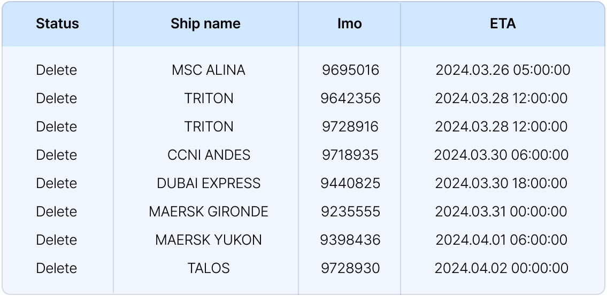
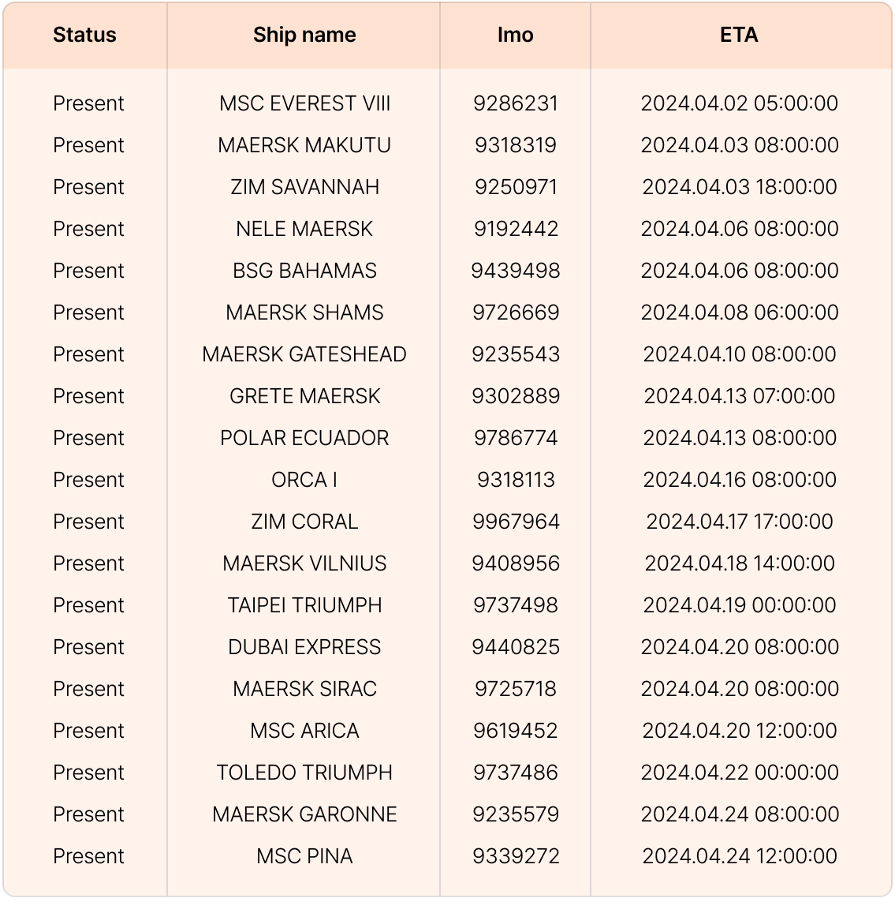

씨벤티지에서는 보다 나은 사용자 경험을 위하여 매주 정기 업데이트를 진행하고 있으며, 사용자 피드백을 적극적으로 반영하려고 노력하고 있습니다. 아래 업데이트 소식을 참고하시어 더욱 확장된 서비스와 기능을 사용해보세요!
업데이트 항목 요약- 선사 스케줄 & 씨벤티지 스케줄 전환 설정
- 새로운 지도 추가
- ETA 변경 현황 확인
Cargo Insight 화물 추적 화면에서는 화물이 실린 배의 도착/출발 정보를 표시합니다. 씨벤티지는 AIS 데이터 기반의 보다 정교한 ATA/ATB/ATD 정보를 제공하며, 선사스케줄 정보도 확인할 수 있도록 전환 기능을 반영했습니다. 실시간 위치 기반으로 선박 출/도착 정보를 보다 정확하게 알기 원한다면 씨벤티지(SV) 정보를, 비즈니스 문서에 '도착 확정' 을 하기 위해 공식 정보가 필요하다면 선사 정보(Carrier)로 전환해 가며 확인할 수 있습니다. 더 이상 각 선사 사이트에서 도착 정보를 일일이 확인하지 않아도 되며 씨벤티지 플랫폼에서 한 번에, 간편하게 조회할 수 있습니다.
 입항 취소된 선박 리스트  입항 취소되지 않은 선박 리스트 * 조건: 3월 25일 이후 삭제된 선박 물류대란, 대처 방안홍해 사태, 볼티모어 교량 붕괴 사건을 비롯해 공급망의 변동성은 앞으로도 계속 반복될 것으로 예상되는 가운데, 씨벤티지는 수출입 기업, 포워더 및 물류사 등 다양한 물류 기업들이 불확실한 글로벌 공급망 환경 속에서 현명한 결정을 내릴 수 있도록 선박, 화물, 항구의 실시간 정보를 한눈에 확인할 수 있는 빅데이터 기반 솔루션을 제공하고 있습니다. 다양한 혼란과 위기 상황에 대비하여 공급망에서 발생하는 모든 상황을 확인하고, 체계적인 대응 계획을 수립해 보세요.